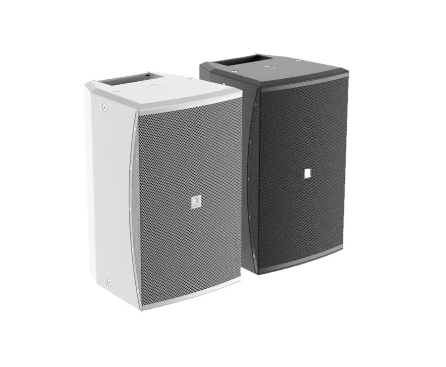

Инсталляционные громкоговорители
Громкоговорители широкого диапазона применений, сочетающие высокое качество звука, умеренный классический дизайн и фирменную надежность AUDAC. Так, модели VEXO – это компактные универсальные громкоговорители, одинаково пригодные для использования в переговорной комнате и в торговом зале. А серия PX предназначена для более крупных помещений, таких как музеи, развлекательные центры и большие конференц-залы. Отличное звучание на всех частотах – стандартная характеристика всех моделей этой серии.